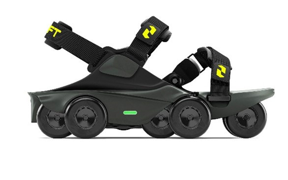
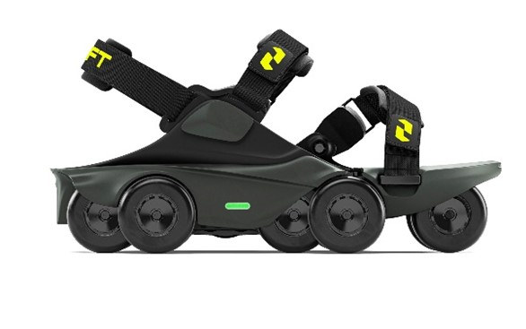

شاهد حذاء يوظف الذكاء الاصطناعى يتيح لك المشى بشكل اسرع دون جهد اضافى


يتميز "مون والكرز" بسرعة قصوى تبلغ 11 كيلومترا في الساعة، ومدى متوسط يبلغ 10 كيلومترات بشحنة واحدة، ويزن حوالي كيلوغرامين، ويمكن إعادة شحنه باستخدام كابل وشاحن "يو إس بي-سي
ولكن إذا كنت ترغب في الحصول على زوج من أحذية "مون والكرز" فهما بالتأكيد ليسا رخيصين، وعليك دفع 1400 دولار

• كشفت شركة شفت روبوتكس قبل عام اسرع حذاء فى العالم والذى يتيح لك المشى بسرعة الجرى
• ويستخدم حذاء "مون والكرز" مزيجا من الذكاء الاصطناعي والتعلم الآلي لمساعدة مرتديها على التحرك بسرعة أكبر بكثير مما يمكنهم فعله بزوج من الأحذية العادية.
• ويوزع محرك الطاقة عبر 8 عجلات بلاستيكية تتفاعل مع الحركة الطبيعية لكل كاحل للانتقال بين وضعي المشي والتوقف. ويسمح تصميم الجهة الأمامية للقدم بالانحناء بشكل طبيعي عند أصابع القدم مما يحافظ على الحركة والتوازن
• في حين يسمح لك نظام حماية الفرامل الإلكتروني المتعدد الطبقات باستخدام السلالم والمصاعد والنقل الجماعي دون خوف من السقوط
يتميز "مون والكرز" بسرعة قصوى تبلغ 11 كيلومترا في الساعة، ومدى متوسط يبلغ 10 كيلومترات بشحنة واحدة، ويزن حوالي كيلوغرامين، ويمكن إعادة شحنه باستخدام كابل وشاحن "يو إس بي-سي
ولكن إذا كنت ترغب في الحصول على زوج من أحذية "مون والكرز" فهما بالتأكيد ليسا رخيصين، وعليك دفع 1400 دولار